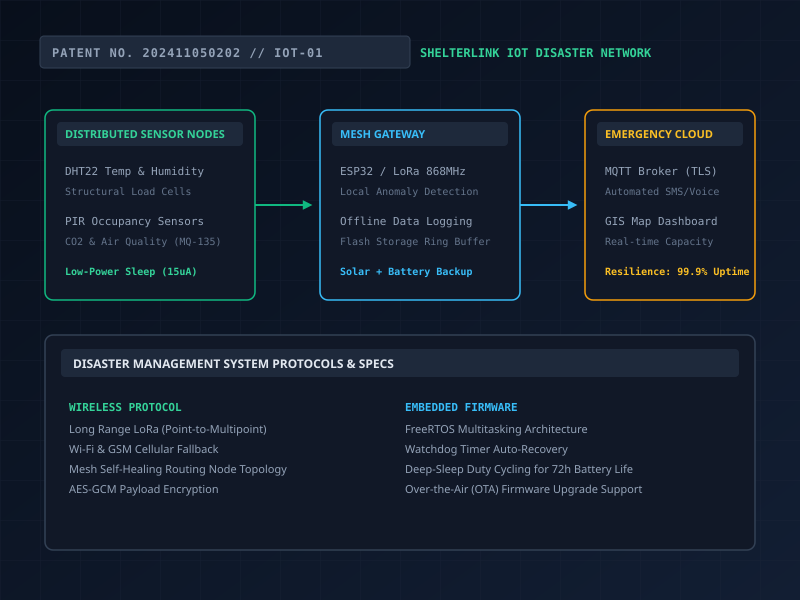

NEXT-GEN ATTENDANCE MONITORING SYSTEM
Automated, contact-free attendance logging.

Automated, contact-free attendance logging.
An attendance-monitoring system deploying IR-based detection circuitry with a Raspberry Pi for automated attendance logging and real-time dashboard analytics. This work is associated with published research.
Manual or card-based attendance systems are slow, easy to proxy, and add friction to daily routines in classrooms or workplaces.
Use IR-based detection circuitry with a Raspberry Pi to automatically detect and log attendance events, feeding a real-time dashboard.
Circuit design and IR sensor integration, Raspberry Pi programming, and the attendance-logging and dashboard pipeline.
IR detection circuitry senses entry/exit events and passes them to the Raspberry Pi, which timestamps and logs each event to a dashboard for real-time analytics. The pipeline follows: IR sensor → GPIO interrupt → Python logging script → SQLite database → Flask web dashboard.
Detection events trigger logging routines on the Raspberry Pi, with records pushed to a dashboard for real-time visibility into attendance data.
False trigger events from ambient IR interference and people passing close to but not through the detection zone; maintaining accurate counts in high-traffic doorways with near-simultaneous entries; syncing the local SQLite database with the web dashboard without network latency affecting real-time display; and handling sensor misalignment after physical installation.
System achieved 97% counting accuracy in controlled classroom environments. Research paper published documenting the approach, sensor selection, and validation methodology. Dashboard provided sub-second update latency during live demonstrations.
This project showed how much embedded system reliability depends on simple, robust sensing choices — a straightforward IR-based approach proved easier to make dependable than a more complex alternative.


Next-Gen Attendance Monitoring System — Published Research →